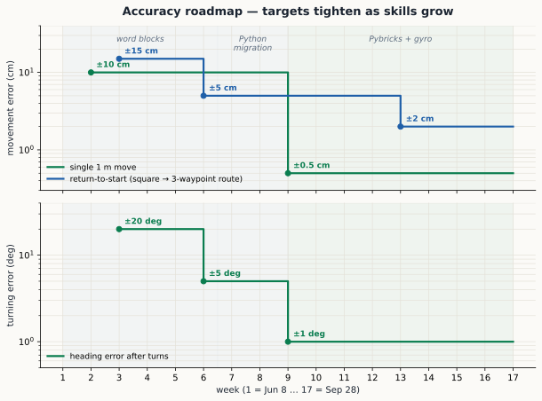

Stage 1: Ramp-up Plan — Word Blocks to Pybricks Python
Window: Week of June 8 → week of September 28, 2026 (17 weeks).
Team starting points
| Boys | Background | Starting track |
|---|---|---|
| Za, Sa | Built robots before, know word blocks; no Python (neither native nor Pybricks) | Veteran track |
| Av, Ar | New to FLL entirely | New-members track |
Tracks converge at the Python migration (Week 7). Until then, veterans get stretch goals and a mentor role — teaching the new members is itself a goal (you only really know it when you can explain it).
Cadence and philosophy
- One 60-90 min session/week: review last week’s milestone (demo, numbers on the whiteboard), discuss what was hard, set next week’s goal. Kids build and program during the week at home.
- Aim-high targets: every milestone has a baseline (everyone hits it) and a stretch (deliberately hard). Let them chase the stretch.
- Measure everything. Numbers (cm of error, degrees of drift) turn “the robot is being weird” into curiosity: why is it off, and by how much, and can we predict it?
- Kit logistics: Av & Ar’s Prime Set + Expansion Set order must be placed before June 30 (LEGO retires SPIKE sales).
The accuracy roadmap
The whole arc in one picture: week over week, the error we tolerate shrinks, in driving and in turning. The chart is deliberately conceptual, with no numbers: real targets come from the team’s own testing, and each week’s goal gets set at the session from the previous week’s measurements — putting an exact number on the plan up front would only mislead. (From experience, well-tuned word blocks already get you surprisingly accurate; the Python and Pybricks payoff is finer precision still, and just as much how repeatably and maintainably you get there.) This accuracy is the foundation for solving missions later: a robot that can’t return to the same spot can’t reliably work a mission model across the table.

Phase A — Foundations (Weeks 1-4)
Week 1 (Jun 8): Hello robot
- New members: unbox the kit (or shared kit until theirs arrives), learn part names (beams, pins, axles), build the standard SPIKE Prime Driving Base. Connect the hub to the SPIKE app, run the first word-block program: drive forward and stop on command.
- Veterans: rebuild/refresh their own drivebase; re-acquaint with the app. Stretch: build a better drivebase than the standard one (lower center of gravity, wheel choice) and justify the changes.
- Milestone: every boy has a robot that drives forward on command.
Week 2 (Jun 15): Moving with intent
- New members: motor blocks vs movement blocks; speed/power; drive a chosen distance (cm per wheel rotation — first taste of math), stop at a line.
- Veterans (mentor + stretch): teach the new members the cm-per-rotation calculation. Stretch: predict where the robot will stop before pressing run, and land close to the prediction. Hint: wheel circumference is all the math you need.
- Milestone: drive a set distance and stop on a target line. Experienced members aim for a tighter margin than new members.
- Key concept: the robot is skid-steer (tank drive), not a car: it turns by driving wheels at different speeds, and turning in place is possible — but skidding wheels are also why dead reckoning lies.
Week 3 (Jun 22): Turns and the gyro
- All: the three turns — pivot (one wheel), spin (wheels opposite), arc (both same direction, different speeds). When is each useful?
- Introduce the gyro (IMU): what it measures (rotation rate → heading), the “turn until angle” block vs timed/degrees turns. Have them race the two approaches for the same quarter-turn and see which is repeatable.
- Milestone: drive a square and come back to the start. Baseline: land in the neighborhood of the start. Stretch: land nearly on the spot, facing the original heading.
- Homework experiment: run the square 5 times and write down the finish error each time. (Seeds Week 5.)
Week 4 (Jun 29): Flex week (July 4th)
- Catch-up week — families travel. Anyone behind finishes prior milestones; anyone ahead does the maze challenge: navigate a taped maze on the floor. Stretch: succeed on the first attempt. Hint: walking the path and sketching the moves before coding saves a lot of attempts.
- Good week for Av & Ar’s kit to arrive and get inventoried.
Phase B — Discovering the limits (Weeks 5-6)
The hook for everything that follows: the robot is not as obedient as it looks, and we can prove it with data.
Week 5 (Jul 6): The robot lies
- Structured experiments, all four boys, results on one shared sheet:
- Spin 10 × 360° using motor degrees, gyro off — the point is to measure what the motors alone do. Mark start heading with tape. How far off is the final heading? Both directions. Why different?
- Forward-back × 5 (1 m each way, gyro off). Where does it end up?
- Sit still 60 s showing the gyro reading. Does it stay at 0?
- Milestone: each boy can name the three error sources they saw (wheel slip / motor differences, accumulation over moves, gyro drift) and show a number for each.
Week 6 (Jul 13): Fighting back with blocks
- Try to fix the errors within word blocks: gyro-corrected turns, drive- straight-with-gyro, slower approach speeds, squaring against a wall.
- Re-run Week 5’s experiments with the fixes. Better? How much? What can’t be fixed with blocks (fine control of corrections, reusable code, real feedback loops)?
- Milestone: square drill noticeably tighter than Week 3, using gyro blocks — and able to say why it improved.
- The cliffhanger: “you’ve hit the ceiling of blocks — next week we take the ceiling off.” (Motivation for Python.)
Phase C — Python migration (Weeks 7-9)
Week 7 (Jul 20): Python without the robot
- Pure Python basics on a laptop (no hub): variables, numbers/strings,
if,for/while, functions, lists. Frame every exercise in robot terms (“a function is a my-block”). - Use any beginner-friendly environment; short daily exercises beat one long session.
- Milestone: each boy writes a function
square_path(side_cm)that prints the moves it would make (drive 50, turn 90, …) — the robot version comes later. - Veterans note: they’re no longer ahead here — everyone starts Python at zero. Reset the stretch dynamic accordingly.
Week 8 (Jul 27): Pybricks on the hub
- Install Pybricks firmware on the hubs (code.pybricks.com; firmware swap is reversible back to LEGO firmware anytime, settable in minutes).
- First programs: beep, light matrix, single motor
run_angle, read the IMU heading and print it live. - Tour of the docs (docs.pybricks.com) — teach them to look things up.
- Milestone: a Pybricks program that drives the Week 2 set-distance task.
- Stretch: beat their own word-block accuracy on the first try.
Week 9 (Aug 3): DriveBase — the real unlock
- The
DriveBaseclass: declare wheel diameter and axle track, thenstraight(1000),turn(90). Then the magic switch:use_gyro(True)— closed-loop heading control. - Re-run the Week 5 experiments in Python with gyro on. Compare all three datasets: blocks open-loop vs blocks gyro vs Pybricks gyro.
- Milestone: straight-line and turn accuracy clearly better than the best word-block result, and repeatable several runs in a row.
- Stretch: hold that accuracy over longer straight runs and many consecutive in-spec runs — watch whether error grows with distance.
- Season note: the new FLL season’s challenge typically releases early August — watch for the 2026-27 Founders Edition announcement and register.
Phase D — Precision engineering (Weeks 10-13)
Week 10 (Aug 10): Calibration
- Wheel diameter and axle track are lies until measured: calibrate them (drive a long known distance, spin 10 × 360°, correct the constants).
DriveBase.settings(): speed, acceleration — how acceleration affects overshoot and wheel slip.- Milestone: a written calibration profile per robot (the numbers, the date, the battery level) and the test that produced it.
Week 11 (Aug 17): The team library
- Turn working code into a shared module:
move_straight(),turn_to_heading()(absolute heading, not relative — discuss why),arc(),wait_for_button(). - Git basics, light touch: the library lives in the shared repo; one change at a time.
- Milestone: a 3-waypoint route. Hint: if the team library is good, the route program is just a handful of calls — that’s the test of the library.
- Stretch: route repeats reliably, ending close to the target on most runs.
Week 12 (Aug 24): Sensors beyond the gyro
- Color sensor: stop on a line, follow a line (simple two-state, then proportional — their first real feedback controller, and the concept transfers to everything).
- Force/distance sensor uses: wall squaring, touch-triggered start.
- Milestone: line follow around a curve + stop on a cross-line.
- Stretch: proportional follower visibly smoother than the two-state one.
Week 13 (Aug 31): Repeatability week
- The week of statistics: pick the 3-waypoint route; run it 10×; measure final error each run. Mean and spread — what’s systematic (fix it) vs random (design margins around it).
- Battery experiment: same route, full vs low battery. Surprise guaranteed.
- Milestone: a one-page “what our robot can do” datasheet: straight-line accuracy, turn accuracy, route repeatability, battery sensitivity.
Phase E — Applied missions (Weeks 14-17)
Week 14 (Sep 7): Attachments and missions
- Build 2-3 mission-style props (lever to flip, object to push/collect, target zone) on a practice table — use the real season mat if released.
- Attachment design: passive vs motor-driven; quick-swap mounts (expansion set parts shine here).
- Milestone: one mission solved reliably: launch, do the task, return.
Week 15 (Sep 14): The launcher and multi-mission runs
- Master program / mission launcher in Pybricks (hub buttons select missions — standard FLL pattern). Launch discipline: aligned start position using a jig.
- Milestone: two missions back-to-back from one launch zone, hands-free.
- Stretch: three missions under 2:30 (robot-game time).
Week 16 (Sep 21): Mock mini-competition
- Full dress rehearsal: 2:30 matches, two boys at the table per run (FLL rule), scored runs, three rounds. Parents invited as audience.
- Debrief like a real team: what failed, why, what’s the fix.
- Milestone: a completed scored match + a written fix list.
Week 17 (Sep 28): Capstone and handoff to Stage 2
- Retrospective: each boy demos the thing he’s proudest of, and we revisit the Week 5 data — show them how far the accuracy came (blocks open-loop → tuned Pybricks). That arc is the curriculum.
- Plan Stage 2 together: season missions analysis, innovation project topic brainstorm (it needs real time — start the topic hunt now), new cadence (2×/week from October).
- Milestone: Stage 2 kickoff scheduled; roles and first mission assignments drafted.
Resources (existing tutorials we lean on)
No single free course runs word blocks → Pybricks → FLL accuracy end to end, but two cover most of it and only need light glue:
- Pybricks “Learn robotics and coding” — https://pybricks.com/learn/ — a 13-chapter path that starts in Pybricks blocks and moves to text Python, ending with a dedicated gyro navigation + calibration chapter. Closest single spine to this plan.
- Pybricks
robotics/ DriveBase docs — https://docs.pybricks.com/en/latest/robotics.html — the authoritative reference for wheel diameter, axle track, thestraight()/turn()calibration procedures, anduse_gyro(True). - PRIME LESSONS — Python lessons — https://primelessons.org/en/PyLessons.html — a complete FLL-framed blocks-to-Python curriculum (Moving Straight, Turning with Gyro, proportional line follower). Targets the official SPIKE App Python, not Pybricks — handy reference, different API.
- LEGO Education “Competition Ready” — https://education.lego.com/en-us/lessons/prime-competition-ready/ — official block-based driving-base + missions lessons; the on-ramp before Python.
- Builderdude35 SPIKE Python videos — https://builderdude35.com/ — video walkthroughs for kids who learn by watching (official SPIKE App Python).
Coach note: pick one Python target. PRIME LESSONS / Builderdude35 / LEGO
teach the SPIKE App Python; our accuracy spine (DriveBase, use_gyro,
calibration) lives in Pybricks. We use Pybricks for the precision work and
treat the others as concept references.
Standing notes
- Pybricks legality: community consensus is that FLL constrains hardware, not programming environment, and many FLL teams compete on Pybricks — but verify against the official 2026-27 robot game rules when they release.
- Two kits, four boys: pair-program deliberately; rotate who drives the laptop vs the robot. The mentor pairing (experienced + new member) through Phase B.
- Session structure that works: 10 min demo of last week’s milestone → 20-30 min new concept (hands-on, minimal lecturing) → set next week’s goal, baseline and stretch, written down where everyone sees it.
- If a week slips, slip the whole plan rather than skipping a phase — Phase B (limits) and Week 13 (repeatability) are the spine of the curiosity arc; don’t cut them.